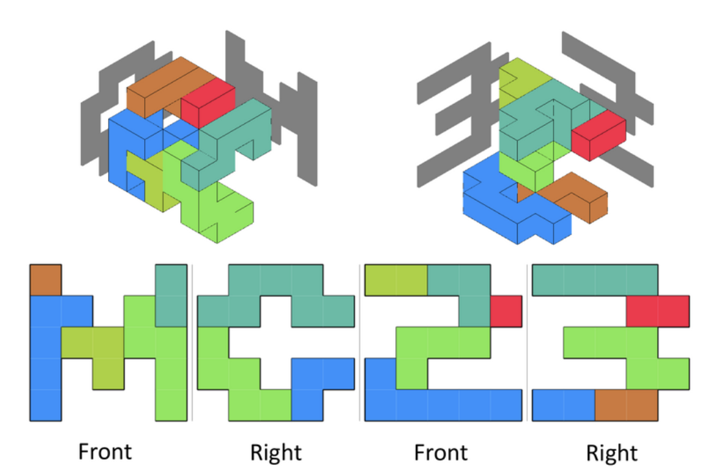

MC Digital プログラミングコンテスト 2023 (AtCoder Heuristic Contest 019)¶

問題概要¶
- 1*1*1の立方体を面同士で接合してできるポリキューブブロックを複数組み合わせて立体を作る玩具を考える
- シルエット画像2枚のペア(合計4枚)が与えられる
- シルエットのサイズはD*D (Dは5〜14)
- これらは、立体を作ったときの側面から見たときのシルエットになっている
- できるだけ、評価値が高くなるようなブロック集合を用意し、それを使ったそれぞれの立体の配置を出力せよ
- 評価値は、共通して使ったブロックについては「1/そのブロックの体積」、片方だけ使ったブロックは「そのブロックの体積」としたときの総和
時間¶
- 367 時間
個人的メモ¶
- うまく探索する方法を見つけるのが難しい問題
- ざっくり、「両方で共通するブロックを同時に考えて、いい感じに探索する」方法が強かった模様
- 結構具体的な探索の仕方は人によって違ってそうで、1位はビームで多様性も確保して良い解を他の人より、よく見つけられていたみたい
- また、ブロックサイズの分散を微調整するのも大事だった模様
問題固有の性質¶
- ブロックのサイズのバランスが重要、基本的にブロック数は少ないほうが良い
- 同じブロック数でも、同じサイズのブロックのみの場合と、大きいブロックと小さいブロックがある場合では、前者の方がスコアがよい
- 立体が密にできるケースと疎になってしまうケースがある
- ブロックサイズは大きくできたほうがスコア的には嬉しい
- 疎にしかできないケースではブロック形状の自由度が下がって、ブロック数も増え、スコアを取りにくい
- 結構、スコア10^9点未満を取れる(大きいブロックのみでの構成が見つけられる)
2次元で考える¶
- 解説放送で言われていたが、考察のため、2次元に簡単化したものでも考えることができる
- 2次元のブロック集合2つで、シルエットがそれぞれ1種類ずつ
アプローチ¶
- validな解を出すだけであれば、シルエットを満たせてない部分を消したり1x1x1ブロックで埋めたりで調整できる
- しかし、小さなブロック集合ができやすく、コストが大きくかかってしまう
- ポイントとしては、以下が重要だったかも
- 両方で共通するブロックを同時に考える
- 極大ブロックを考える
- シルエットセルの重み付け(そのセルをカバーする難しさ、優先度)
- ブロックサイズの分散の改善を入れる
- 探索方法は結構上位でもいろいろ、かつ、それらの組み合わせ
- ビームサーチ、chokudaiサーチ
- 評価関数がむずい
- 多点スタート山登り/乱択貪欲
- 焼きなまし
- 部分破壊&再構築
- シード点&回転の列
- MCTS
- ビームサーチ、chokudaiサーチ
両方で共通するブロックを同時に考える¶
- 「あるブロック集合で目的のシルエットを満たす立体が作れるか？」を探索すると結構重い
- より効率的だったのが「両方で共通するブロックを同時に考える」こと
- ブロック形状は同じで、違うのが位置と回転だけで、片方を固定すると、もう片方の位置と回転だけ考えれば良くなる
- 回転後の状態は24種類しかないので、位置を決めたら回転は全パターンを試して一番良いのを選ぶ、などができる
極大ブロックを考える¶
- 両方で共通するブロックを同時に考える場合、両方で1x1x1ブロックから拡張することが考えられる
- 位置と回転方向を決めると、この1x1x1ブロックから両方でシルエットをはみ出さないようにBFSなどで拡張して極大ブロックを得ることができる
- シルエットが綺麗にうまっていないといけないので、基本的に、端の方にあるシルエットもそれをカバーするブロックが存在するので、あまり中途半端なカバーの仕方をするブロックを考える必要性は低い
- ただ、極大ブロックでは最適解を得られない可能性もあるので、注意が必要そう
- 可能なブロックを全列挙して探索、あとでブロックを拡大縮小して調整、など
- (ブロックの重なりを無視して列挙し、あとから重なりを調整、とかもできなくはないが難しい)
シルエットセルの重み付け¶
- シルエットをカバーするのが簡単なセルと難しいセルがある
- 真ん中あたりは結構どうとでもなりそうな一方、端やシルエットの違いで疎な感じになっているところはかなり候補が限られる
- そういう難しいところを優先的に探索するのが有効だった模様
ブロックサイズの分散の改善¶
- アプローチにもよるが、探索したブロック集合の各ブロックサイズの分散が大きくなりやすい
- 大きいブロックがある一方、小さいブロックもあるような状態
- ブロックサイズは、他のブロックを押しのけて(部分を奪って)拡張したりできる場合はそれでサイズ調整ができる可能性がある
- 連結を保つ必要もあるので、その判定も必要
- 山登り等で微調整して上げることでブロックサイズの分散が小さくなり、スコアが改善
ビームサーチ系¶
- 明らかに探索空間がガタガタっぽいので、乱択貪欲やビームサーチの方がよさそうに思われる
- ビームサーチ系は途中状態の評価が難しいが、うまく近傍と評価関数が設計できると有効だった模様
- 評価関数としては、カバーしているシルエットセル数、シルエットの埋めるペースなど
- 1位の方は、ブロックサイズ多様性で分けたミニ幅(WIDTH=1とか3)ビームとかで探索してたりしたみたい
山登り/焼きなまし系¶
- 部分領域再構築の場合
- 構成したブロックをいくつか(1個〜3個)消してその領域で作り直したりしたものを近傍にして探索
- 基本近傍として、ブロックの追加削除、サイズ変更なども
- 構成したブロックをいくつか(1個〜3個)消してその領域で作り直したりしたものを近傍にして探索
- シード点拡張の場合(「状態を2分して同時に最適化する」テク？)
- やや非自明だが、両方でのシードブロックの位置と向きを決めて、そこから同時にBFS等で(極大)ブロックを考える
- 向きは片方の24通りだけ考えればいいので、状態としては、
(pos0,pos1,angle)の列
- 向きは片方の24通りだけ考えればいいので、状態としては、
- このシードブロックの列の順番や位置・向きを状態として変更した近傍を探索
- やや非自明だが、両方でのシードブロックの位置と向きを決めて、そこから同時にBFS等で(極大)ブロックを考える
- 山登りの場合は、探索空間がガタガタな感じもあるので、多点スタートで時間いっぱい試す
MCTS系¶
- ブロック設置を着手と考えると、ゲーム木的に考えることができる
- あるブロックの設置の仕方が結果としてよかったか、考えることができる
- 無駄な探索をしないよう工夫を入れてプレイアウトする
回転の種類数(24種類)¶
- ブロックを軸を中心に回転させる場合、x軸、y軸、z軸の3軸それぞれで、0度、90度、180度、270度の4種類なので、操作は4^3=64通りある
- しかし、x軸を180度回転させた後の状態は、y軸とz軸を180度回転させたものと同じになるなど、回転後の状態はこれよりも少ない(状態は24通り)
- サイコロや、チンアナゴみたいな形のブロックを考える
- サイコロだと、「1の面がどこを向いているか？が6面分」と「1と6を軸に回転させた4種類」で24通り
- チンアナゴみたいな形だと、「胴体の向きが6通り」と「頭の向きが6通り」で24通り
- 「回転させる軸の順番(3!=6通り)」と「x軸とy軸を反転させるか(2^2=4通り)」(z軸の反転は一意に決まる)で考える方法もあるみたい
- 公式ツールの
is_same()など参考 - 解説放送では、回転操作をdx,dy,dzで考える方法が紹介されていた
最適解の見積もり¶
- 今回、相対評価で、理論値(最適解)的なものを見積もるのも難しかったため、ローカルでの評価が難しかった
- また、暫定の50ケースだけでの評価もケースによる難しさが違うのもあって、最終結果でそこそこshakeしている
- そのケースの最高スコアが0.1とかのときに、スコア10が5に改善してもあまり相対スコアは変化しないなどがありえて、順位表で思ったより伸びないなども
- 自己ベストとの比較などよりも対数での評価の方がよかったかも
- 一応、大きな改善をしたら基本的にスコアも小さくなるので、細かい改善でなければ結構目に見えてわかりはする
その他¶
- Tensorflowの(旧)ロゴもシルエット
- お絵かき
- 人手やるとしたら、を考える
- AVX2で高速化
- Webビジュアライザを手元で動かして、実行結果を自動で反映したい
解説¶
(50位まで&発言を見つけられた方のみ)
- 1位USAさん
- 2位ynasuさん
- 3位rhooさん
- 4位simanさん
- https://twitter.com/_simanman/status/1642471944191905792
- https://twitter.com/_simanman/status/1642473065396436992
- https://twitter.com/_simanman/status/1642489031954149376
- https://twitter.com/_simanman/status/1642489670599852032
- https://twitter.com/_simanman/status/1642495691955265543
- https://twitter.com/_simanman/status/1642527804796579841
- https://simanman.hatenablog.com/entry/2023/04/03/014938
- 5位kawateaさん
- 6位btk15049さん
- 7位komori3さん
- 8位Jirotechさん
- https://twitter.com/Jiro_tech15/status/1642472695882485760
- https://twitter.com/Jiro_tech15/status/1642474297930420224
- https://twitter.com/Jiro_tech15/status/1642474518139764741
- https://twitter.com/Jiro_tech15/status/1642477476394995712
- https://twitter.com/Jiro_tech15/status/1642477815152119808
- https://twitter.com/Jiro_tech15/status/1642478055561256961
- https://twitter.com/Jiro_tech15/status/1642478263850405889
- https://twitter.com/Jiro_tech15/status/1642480446079651840
- https://twitter.com/Jiro_tech15/status/1642488589132103681
- https://twitter.com/Jiro_tech15/status/1642487506892636160
- https://twitter.com/Jiro_tech15/status/1642494676208070659
- https://twitter.com/Jiro_tech15/status/1642495637378965504
- https://twitter.com/Jiro_tech15/status/1642747650184482817
- 9位tomerunさん
- https://twitter.com/tomerun/status/1642467519251501056
- https://twitter.com/tomerun/status/1642467952179154946
- https://twitter.com/tomerun/status/1642472269254627328
- https://twitter.com/tomerun/status/1642473225061040129
- https://twitter.com/tomerun/status/1642473929767030786
- https://twitter.com/tomerun/status/1642482517126287360
- https://twitter.com/tomerun/status/1642821723027562496
- https://twitter.com/tomerun/status/1642899751862693889
- https://twitter.com/tomerun/status/1642894175913021441
- 10位saharanさん
- 11位Shun_PIさん
- https://twitter.com/Shun___PI/status/1642472452617031680
- https://twitter.com/Shun___PI/status/1642476063401066497
- https://twitter.com/Shun___PI/status/1642478982963806208
- https://twitter.com/Shun___PI/status/1642722135511826434
- https://twitter.com/Shun___PI/status/1642739707942678529
- https://twitter.com/Shun___PI/status/1643261791684952070
- https://twitter.com/Shun___PI/status/1643262259249156106
- https://twitter.com/Shun___PI/status/1643265069315420163
- 12位KawattaTaidoさん
- 13位kosakkunさん
- https://twitter.com/kosakkun/status/1642467960815251456
- https://twitter.com/kosakkun/status/1642469427349458946
- https://twitter.com/kosakkun/status/1642470155254124544
- https://twitter.com/kosakkun/status/1642472830947463168
- https://twitter.com/kosakkun/status/1642487191921377280
- https://twitter.com/kosakkun/status/1642821087032664064
- 14位daiwakunさん
- 15位wanuiさん
- 16位nagissさん
- 17位eulerscheZahlさん
- 18位birdwatcherさん
- 19位c7c7さん
- 20位shamioさん
- 21位xyz600さん
- https://twitter.com/xyz600600/status/1642470285315309573
- https://twitter.com/xyz600600/status/1642470647493455872
- https://twitter.com/xyz600600/status/1642474257916760064
- https://twitter.com/xyz600600/status/1642479291945598976
- https://twitter.com/xyz600600/status/1643235372980400130
- https://xyz600.hatenablog.com/entry/2023/04/09/132729
- 22位fuppy0716さん
- https://twitter.com/fuppy_kyopro/status/1642475539029164032
- https://twitter.com/fuppy_kyopro/status/1642473870069469184
- https://twitter.com/fuppy_kyopro/status/1642476773224099840
- https://twitter.com/fuppy_kyopro/status/1642477715021504512
- https://twitter.com/fuppy_kyopro/status/1642478204886876160
- https://twitter.com/fuppy_kyopro/status/1642479795815731200
- https://twitter.com/fuppy_kyopro/status/1642493991362117633
- https://twitter.com/fuppy_kyopro/status/1642497755221483520
- https://twitter.com/fuppy_kyopro/status/1642502706064662529
- 23位tashikaniさん
- 24位kusanoさん
- 25位dn6049949さん
- 26位iwashi31さん
- https://twitter.com/iwashi31/status/1642472325407985667
- https://twitter.com/iwashi31/status/1642493496098713601
- https://twitter.com/iwashi31/status/1642502462119755777
- https://twitter.com/iwashi31/status/1642506163798564864
- https://twitter.com/iwashi31/status/1642507006367109126
- https://twitter.com/iwashi31/status/1642508287408226316
- https://twitter.com/iwashi31/status/1642541802996797440
- https://twitter.com/iwashi31/status/1642684454350225410
- https://twitter.com/iwashi31/status/1642689086262747137
- https://twitter.com/iwashi31/status/1642915119142416384
- 27位tek1031さん
- 28位shell_wataruさん
- 29位kensさん
- 30位shotoyooさん
- 31位arfzさん
- 32位saitodevel01さん
- 33位yokozuna57さん
- 34位chudanuさん
- 35位hamamuさん
- 36位risujirohさん
- 37位throughさん
- 38位Aquariusさん
- 40位rs02さん
- 41位ssaattooさん
- 42位ebicochinealさん
- 43位tempura0224さん
- 44位behoma8さん
- 45位daijuさん
- 46位fky_さん
- 47位neterukunさん
- 48位fgwiebfaoishさん
- 49位titiaさん
- 50位qLethonさん
- https://twitter.com/pu__Ne/status/1642475776133206016
- https://twitter.com/pu__Ne/status/1642475878604234753
- https://twitter.com/pu__Ne/status/1642477119157710848
- https://twitter.com/pu__Ne/status/1642478994196140033
- https://twitter.com/pu__Ne/status/1642474915839496196
- https://hackmd.io/@qLethon/ryodgtjl3